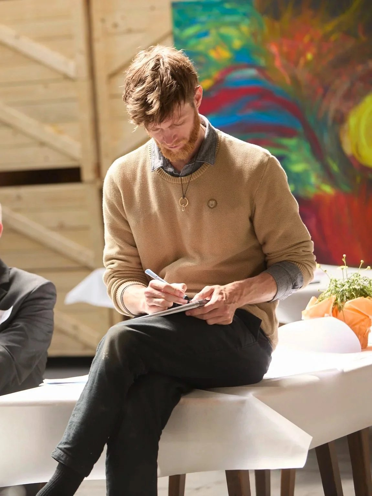
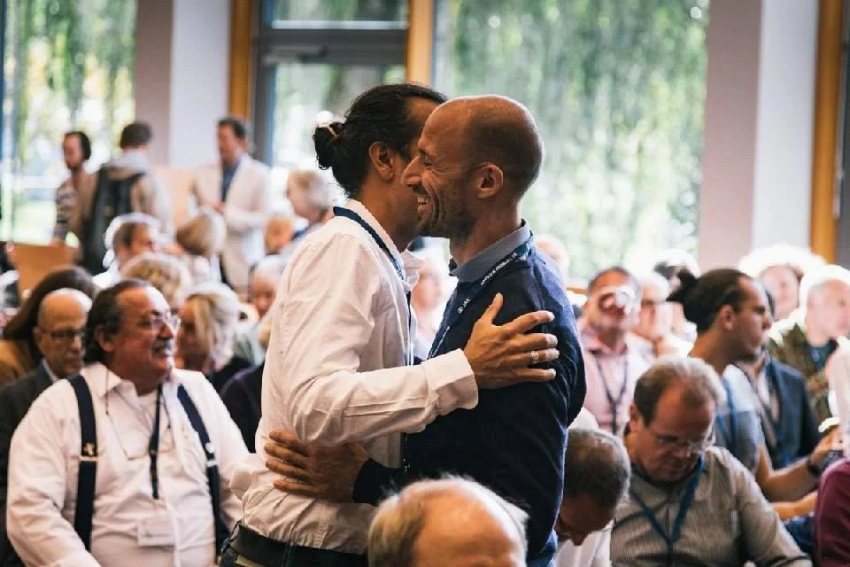
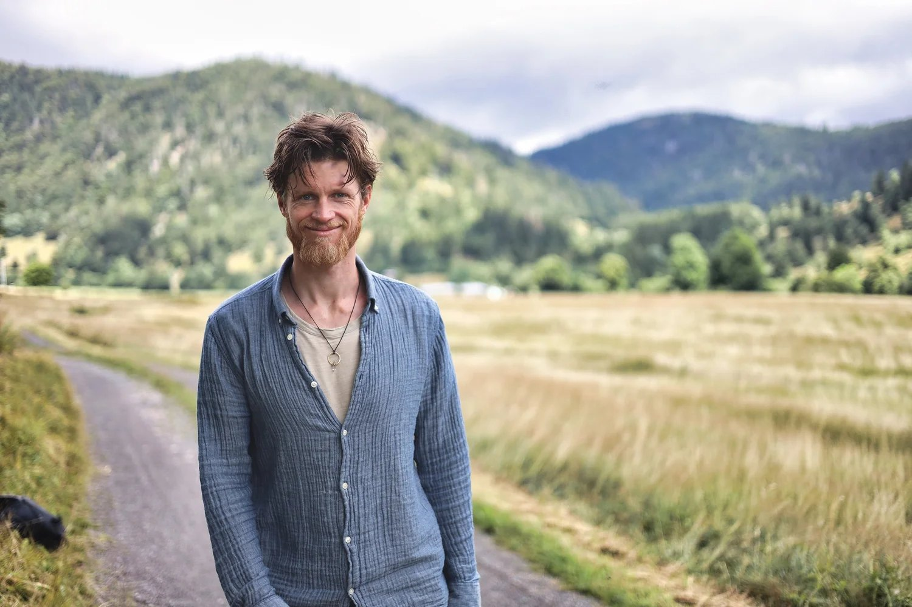

Seit über acht Jahren begleite ich Menschen und Organisationen in entscheidenden Momenten
Facilitator, Graphic Recorder und Kulturentwickler aus Freiburg.
In unzähligen Workshops, Konferenzen und Transformationsprozessen habe ich gelernt, was es braucht, damit echte Veränderung nicht nur besprochen, sondern auch gelebt wird. Dieser Weg begann früh – mit der Suche nach mehr Lebendigkeit und Tiefe in der Zusammenarbeit.
Mir wurde schnell klar, dass in klassischen, rein kopflastigen Formaten ein enormes Potenzial verloren geht. Diese Erkenntnis war der Funke, der mich dazu bewog, mich intensiv mit partizipativen Methoden und der Kunst des „Art of Hosting“ zu beschäftigen.
Erfahrung, die Räume öffnet.
Mein Weg in die Prozess- und Organisationsentwicklung ist getragen von einem Fundament aus systemischem Denken, geschärft durch mein Studium der Umwelt- und Nachhaltigkeitswissenschaften, und einem tiefen Gespür für menschliche Dynamiken aus der Theater- und Prozessarbeit.
Heute verbinde ich diese Welten. Ich bringe ein tiefes Verständnis für strategische Herausforderungen mit und ergänze es durch Ansätze aus der kollektiven Trauma-Arbeit, Theory U und Embodiment. Diese Kombination erlaubt es mir, sowohl die sachliche als auch die menschliche Ebene in Veränderungsprozessen professionell zu begleiten.

Von interaktiven Methoden zur menschlichen Tiefe
Meine Arbeit ist getragen von der tiefen Überzeugung, dass in jedem Menschen und in jeder Gruppe ein enormes Potenzial steckt. Ich habe immer wieder erlebt: Wenn Menschen an ihrem Platz sind, ihre Arbeit als sinnvoll empfinden und in echter Verbindung mit sich und anderen stehen, entsteht Großes.
Es ist diese menschliche Lebendigkeit, die Organisationen zukunftsfähig und resilient macht. Meine Rolle dabei ist nicht die des Beraters, der fertige Lösungen präsentiert. Ich sehe mich als Partner, der die Räume hält, in denen Teams ihre eigenen, passgenauen Antworten finden können – mit Klarheit, Tiefe und einer Prise Humor.
Persönliches
Ausgleich finde ich in der Natur – beim Bergsteigen in den Alpen und Radfahren im Schwarzwald. Ich bin Vater einer vierjährigen Tochter, die mich täglich an das Wunder des Lebens erinnert. Auch die Musik ist ein wichtiger Teil meines Lebens: als Tänzer und DJ kreiere ich Räume, in denen Menschen in Bewegung, in Kontakt und ins Fühlen kommen. Nebenbei begleite ich in Einzelsitzungen Menschen in ihrer persönlichen Entwicklung – eine Arbeit, die mir immer wichtiger wird.
